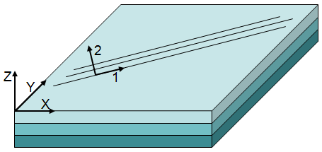
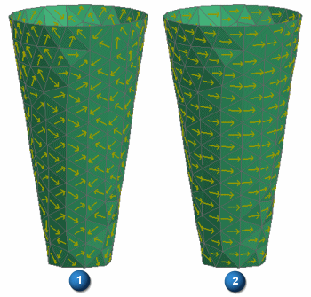

以下图形显示了具有三个层片的层合板的层合板坐标系，以及顶部层片的层片坐标系。
X 和 Y 轴与材料方向坐标系相对应，也称为层合板坐标系。
Z 轴垂直于该层合板。
1 和 2 轴与层片坐标系相对应。

单元坐标系
通过其节点位置以及对节点进行标签的顺序定义。
材料坐标系
独立于网格，用于定向各向异性或正交各向异性属性，例如层状复合材料的属性。
层片坐标系
它的轴 1 与层片的纤维方向对齐。
|
注释 |
|
|

|